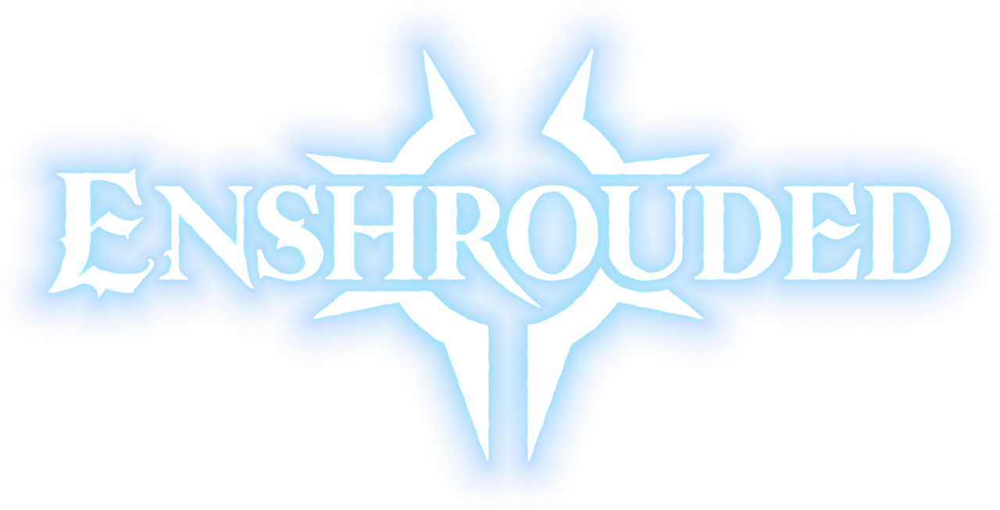

Enshrouded
Retour aux Aventures programmées
La Guilde s’aventure dans les ruines d’un royaume déchu, où une mystérieuse Brume a dévasté les terres et transformé leurs habitants en créatures hostiles.
📜 Informations de l'expédition
Origine : Aventure principale 🏆
Statut : Cartographiée 🗺️
📅 Début : À définir
🎮 Type : Survie / Exploration / Construction / Action-RPG
👥 Participants : Mk, Elfyre
📖 Histoire de l'aventure
Autrefois prospère, le royaume d’Embervale a sombré dans le chaos après que la soif de pouvoir de ses habitants a libéré une mystérieuse Brume capable de corrompre tout ce qu’elle touche.
Des civilisations entières ont disparu, laissant derrière elles des ruines envahies par des créatures dangereuses.
Dernier espoir de ce monde déchu, la Guilde devra explorer les terres dévastées, affronter les horreurs de la Brume et réveiller les pouvoirs d’une ancienne flamme.
En reconstruisant ses refuges et en découvrant les secrets du passé, elle tentera de redonner vie à un royaume au bord de l’extinction.
🎯 Objectifs de l'expédition
- 🌫️ Explorer les terres corrompues par la Brume
- 🏰 Reconstruire notre refuge et faire renaître le royaume
- 🔥 Percer les secrets de la Brume et restaurer la Flamme